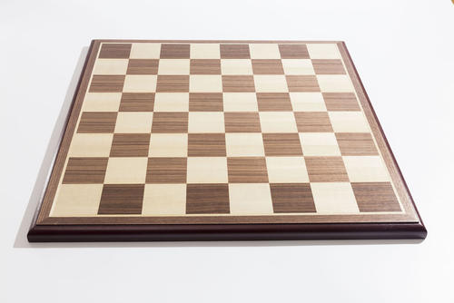
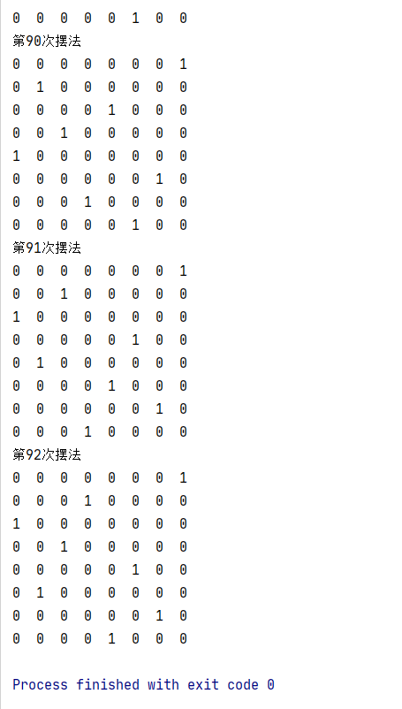

八皇后问题来自国际象棋当中的皇后的摆法问题，是一个经典的算法问题
国际象棋：
1
| 国际象棋是一个8 乘 8 的正方形棋盘，其中皇后 可以直线行走，斜线行走 都是不分上下左右和格数的
|
下图是一种可行的八皇后摆法：

所以，可归纳问题的条件为，8皇后之间需满足：
思路出来了，下面就是把思路转换为代码了：
代码实现：
1
2
3
4
5
6
7
8
9
10
11
12
13
14
15
16
17
18
19
20
21
22
23
24
25
26
27
28
29
30
31
32
33
34
35
36
37
38
39
40
41
42
43
44
45
46
47
48
49
50
51
52
53
54
55
56
57
58
59
60
61
62
63
64
65
66
67
68
69
70
71
72
73
74
75
76
77
78
79
80
81
82
83
84
85
86
87
| public class TestQueen {
private static final int QUEEN_NUM = 8;
private static final int[][] Checkerboard = new int[QUEEN_NUM][QUEEN_NUM];
private static int COUNT = 0;
public static final void show() {
System.out.println("第" + (++COUNT) + "次摆法");
for (int i = 0; i < QUEEN_NUM; i++) {
for (int j = 0; j < QUEEN_NUM; j++) {
System.out.print(Checkerboard[i][j] + " ");
}
System.out.println("");
}
}
public static final boolean check(int row, int col) {
for (int i = row - 1; i >= 0; i--) {
if (Checkerboard[i][col] == 1)
return false;
}
for (int i = row - 1, j = col - 1; i >= 0 && j >= 0; i--, j--) {
if (Checkerboard[i][j] == 1)
return false;
}
for (int i = row - 1, j = col + 1; i >= 0 && j < QUEEN_NUM; i--, j++) {
if (Checkerboard[i][j] == 1)
return false;
}
return true;
}
public static final void play(int row) {
for (int i = 0; i < QUEEN_NUM; i++) {
if (check(row, i)) {
Checkerboard[row][i] = 1;
if (row == QUEEN_NUM - 1) {
show();
} else {
play(row + 1);
}
Checkerboard[row][i] = 0;
}
}
}
public static void main(String[] args) {
play(0);
}
}
|
测试结果:
